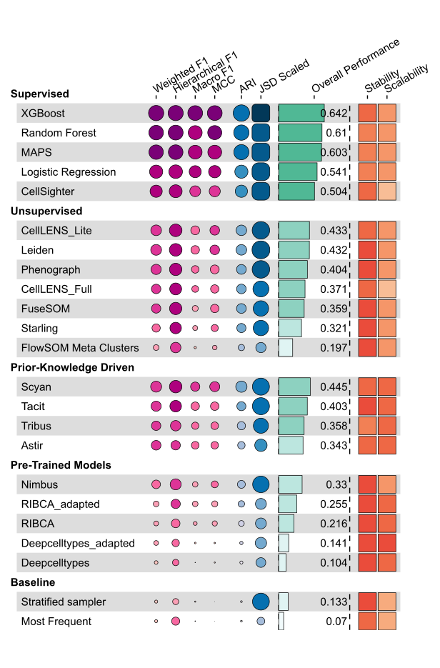

Methods Evaluated
20
We evaluated a wide range of popular and novel methods for cell phenotyping.
Datasets Evaluated
13
Our benchmark includes datasets from various cancer types and healthy tissues to ensure robustness.
Metric Categories
4
Performance was measured across accuracy, robustness, scalability, and interpretability
Performance Overview
Average scores and rankings across all datasets

Full Results
Detailed metric matrices and per-class F1 heatmaps have moved to a dedicated Results page.
Insights & Recommendations
Key findings from the benchmark analysis
Optimal Method Selection
Supervised methods can recover cell types the best but require labelled data which can be challenging to obtain.
Reliable Fallback Option
Prior-knowledge based methods perform well when labeled data is scarce and can be used when quick results are needed. However, they require careful tuning and may not generalize well to all datasets.
Specialized Solution
For large datasets, clustering and/or visual gating with scimap can help identify key regions of interest before applying supervised methods.